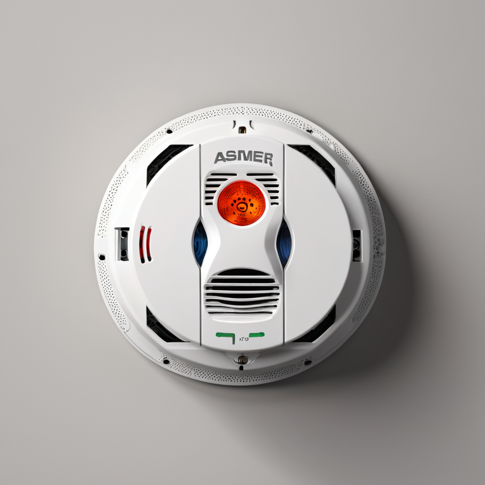
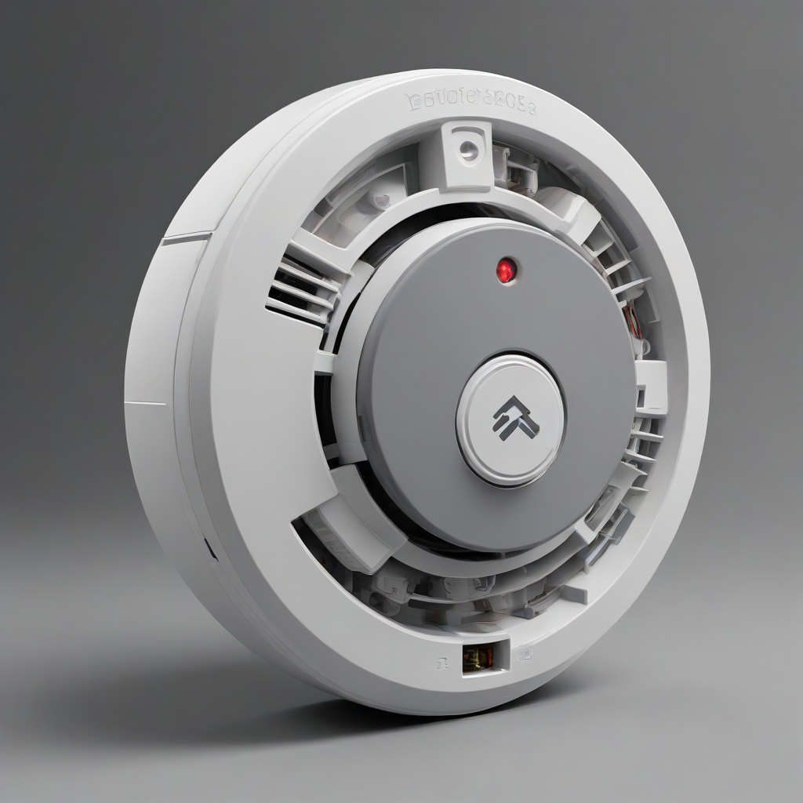

Top Pick for 2026: The Google Nest Protect remains the gold standard for smart home integration, offering voice alerts and app connectivity. For pure reliability without smart features, the Kidde Nighthawk is the top hardwired choice. Always ensure your unit is listed by UL or meets NFPA 72 standards.
Home safety begins with early detection. A working smoke detector is not just a building code requirement; it is the primary line of defense against residential fire deaths. As we move through 2026, the technology available to homeowners has evolved significantly. We are no longer limited to simple beeping units; today, safety devices integrate seamlessly with smartphone ecosystems, offer voice alerts, and provide remote monitoring. However, amidst the marketing hype, the fundamental goal remains the same: saving lives.
Choosing the right device can feel overwhelming given the variety of power sources, sensor technologies, and feature sets available on the market. Renters face different challenges than homeowners, and smart home enthusiasts have different needs than those prioritizing simple reliability. This guide cuts through the noise to provide a comprehensive breakdown of the best smoke detector 2026 options. We focus on safety standards, practical installation advice, and value, ensuring your home remains protected without breaking the bank.
In this complete guide, we will analyze the differences between sensor types, weigh the pros and cons of connectivity, and review specific models that stand out in performance and durability. Whether you are upgrading an old system or setting up a new rental property, the following insights will help you make an informed decision that prioritizes the well-being of your household.
Understanding Sensor Technology: Ionization vs. Photoelectric

Before selecting a specific brand, you must understand how the detector actually senses fire. Not all fires burn the same way, and different detection technologies respond differently to specific fire types. Understanding this distinction is the first step toward ensuring comprehensive coverage in your home.
Photoelectric Detectors
Photoelectric detectors are generally preferred by fire safety organizations for modern homes. These units use a light beam inside a sensing chamber. When smoke enters the chamber, it scatters the light beam, triggering the alarm. This technology is highly effective at detecting smoldering fires, which produce large amounts of visible smoke before flames appear. Smoldering fires are often caused by bedding or furniture catching fire, which is why the National Fire Protection Association (NFPA) recommends photoelectric units for bedrooms and living areas.
Ionization Detectors
Ionization detectors contain a small amount of radioactive material that ionizes the air between two electrically charged plates. When smoke enters, it disrupts the flow of current, sounding the alarm. These units are more sensitive to fast-flaming fires, such as those caused by electrical fires or cooking grease. While effective, they are more prone to false alarms from cooking smoke compared to photoelectric models. Because of this, they are less common in new installations unless used in a dual-sensor configuration.
Dual-Sensor Technology
For the highest level of protection, many experts now recommend dual-sensor smoke detectors. These units combine both ionization and photoelectric sensors in a single housing. This ensures you are protected against both fast-flaming and slow-smoldering fires without needing to install two separate units. While these models often come with a higher price
Power Sources: Hardwired vs. Battery Smoke Detector
The power source of your alarm dictates its reliability and installation complexity. When comparing a hardwired vs battery smoke detector, it is crucial to consider your home's electrical infrastructure and your personal maintenance habits.
Hardwired Systems with Backup Battery
Hardwired detectors are connected directly to your home's electrical system. They are typically installed in series, meaning if one detects smoke, they all sound simultaneously. This is a critical feature for interconnected systems. Most hardwired units also require a backup battery (usually 9V or AA) to ensure operation during a power outage. While installation requires professional knowledge of electrical wiring, these units are generally more reliable because they do not rely solely on a battery that can degrade over time.
Hardwired systems are often required by code for new construction in the United States. If you are renovating or building, ensure your electrician installs units that are compatible with your existing interconnect wires. Do not mix old and new hardwired units from different manufacturers, as the communication protocols may not match, leading to system failures.
Battery-Operated Systems
Battery-powered smoke detectors offer flexibility. They are ideal for renters, older homes where wiring is difficult to access, or for adding detectors to areas like detached garages or patios. Modern battery units often come with 10-year sealed lithium batteries, meaning you never have to change the battery until you replace the entire unit. This eliminates the common issue of homeowners swapping out batteries and forgetting to put them back in.
However, there is a downside. If a thief cuts the power to the house, hardwired units might fail if the backup battery is dead. Battery units avoid this but require you to monitor the battery life. Always opt for the 10-year battery models to reduce maintenance friction.
Smart Features and Interconnected Smoke Alarms
The integration of technology into safety devices has changed the landscape of home security. Many homeowners now look for a smart smoke detector with camera or at least advanced connectivity. However, it is important to manage expectations regarding what these devices can actually do.
Interconnected Smoke Alarms
Interconnection is a safety feature, not a smart feature. It ensures that when one alarm goes off, every alarm in the house goes off. This is vital if a fire starts in the kitchen while the family is asleep in a bedroom on the opposite side of the house. Hardwired systems are naturally interconnected via wire. Wireless systems can achieve this through radio frequency (RF) technology. When shopping for battery units, look for "wireless interconnect" capabilities. This allows you to link multiple battery units without running wires through your walls.
Smart Home Integration
Smart smoke detectors connect to your Wi-Fi network and link to apps like Google Home, Alexa, or Apple HomeKit. They offer distinct advantages over traditional units:
- Remote Notifications: You receive an alert on your phone if the alarm sounds, even if you are at work.
- Carbon Monoxide Monitoring: Many smart units combine smoke and CO detection.
- Voice Alerts: Units like the Nest Protect can tell you exactly what is wrong ("Fire in the kitchen") rather than just beeping.
- Maintenance Alerts: The app tracks the age of the sensor and the battery level, reminding you to replace the unit before it expires.
Regarding the search for a smart smoke detector with camera, it is important to note that dedicated smoke detectors rarely include cameras due to privacy and battery constraints. Instead, these functions are usually separate devices that integrate. A smart detector alerts your phone, which can trigger a connected security camera to start recording. This provides visual verification of the emergency without compromising the safety certification of the smoke detector itself.
Smoke and Carbon Monoxide Combo Units
Fires aren't the only invisible killer in the home. Carbon monoxide (CO) is odorless and colorless, making it undetectable by human senses. A smoke and carbon monoxide combo unit is an efficient way to protect against both hazards without cluttering your ceilings with multiple devices.
Combination detectors are widely available in both hardwired and battery configurations. They typically use a photoelectric sensor for smoke and an electrochemical sensor for carbon monoxide. The primary benefit is cost-effectiveness and streamlined installation. Instead of mounting two separate units, you mount one.
However, there are considerations. If the smoke sensor needs replacement due to age but the CO sensor still has life left, you usually have to replace the entire unit. Additionally, CO alarms have different placement requirements than smoke detectors. While smoke detectors go on the ceiling (smoke rises), CO detectors should be mounted at breathing level (around 5 feet off the floor) or outside sleeping areas. Combo units are generally designed to be mounted on the ceiling but must be placed near sleeping areas to be effective for CO. Always follow the manufacturer's installation guide strictly.
Top Product Recommendations for 2026
Based on performance, reliability, user reviews, and safety certifications, here are the top recommendations for 2026. We have categorized them by user need to help you find the right fit.
| Product Model | Type | Power Source | Key Feature | Approx. Price |
|---|---|---|---|---|
| Google Nest Protect | Dual Sensor | Hardwired/Battery | Voice Alerts & App | $110 |
| Kidde Nighthawk | Ionization/Photo | Hardwired w/ Backup | Quiet Hush Button | $45 |
| First Alert Onelink Safe & Sound | Photoelectric | Hardwired | Interconnected System | $60 |
| Eufy Security eAgent | Photoelectric | Hardwired | Smart Home Hub Integration | $70 |
| BRK Brands Dual Sensor | Dual Sensor | 10-Year Battery | Sealed Lithium Battery | $35 |
| Amazon Echo Spot (with Guard) | Audio Detection | Plug-in | Smart Speaker Integration | $50 |
Google Nest Protect
The Nest Protect is widely considered the premium choice. Its "Squirrel" sensor technology reduces false alarms significantly. The voice alert feature is a game-changer; it speaks the location and type of emergency. It integrates with almost all major smart home platforms. The downside is the price and the complexity of the app setup.
Kidde Nighthawk
Kidde is a legacy brand in fire safety. The Nighthawk is a workhorse for hardwired installations. It features a "Quiet" button that silences nuisance alarms without disabling the unit. It is not smart, but it is incredibly reliable and meets strict code requirements for new construction.
BRK Brands Dual Sensor
For budget-conscious buyers or renters, the BRK Dual Sensor is excellent. It comes with a 10-year sealed battery, meaning you install it and forget it for a decade. It combines ionization and photoelectric sensors without the cost of a hardwired system.
Best Smoke Detector for Renters
Renters face unique challenges. Landlords often provide basic units that may be outdated, and drilling holes in the ceiling for hardwired replacement is usually prohibited. The best smoke detector for renters is one that is easy to install, portable, and compliant with safety standards.
Look for battery-operated photoelectric detectors with 10-year sealed lithium batteries. These units are lightweight and can be mounted with adhesive straps or simple screws that leave minimal damage. When you move out, you can take them with you. Avoid plug-in units if possible, as they are not required to meet the same UL standards as ceiling-mounted detectors in some jurisdictions and can be easily unplugged.
Additionally, check your lease agreement. Some landlords require that you keep the original unit they provided. If you are allowed to upgrade, ensure the replacement unit is certified by Underwriters Laboratories (UL) or the Factory Mutual (FM). Do not rely solely on the battery unit provided by the landlord if it is past its 10-year expiration date.
Placement and Maintenance Best Practices
Even the best device will fail if it is installed incorrectly. Proper placement is critical for detection speed. Install smoke alarms on the ceiling or high on the wall, as smoke rises. Place them inside every bedroom, outside each sleeping area, and on every level of the home, including the basement. Avoid installing them near windows or vents, as drafts can prevent smoke from entering the sensor.
Maintenance Schedule
Maintenance is non-negotiable. Follow this checklist:
- Monthly Test: Press the test button to ensure the alarm sounds and the battery is working.
- Annual Cleaning: Use a vacuum cleaner with a brush attachment to remove dust from the exterior vents. Dust is the leading cause of false alarms.
- Expiration Check: Smoke detectors expire after 10 years. The plastic becomes brittle and sensors degrade. Check the manufacture date on the back of the unit and replace it if it is older than a decade.
- Battery Replacement: If your unit uses replaceable batteries, swap them when you change your clocks for Daylight Saving Time.
If you hear a chirping sound, it usually indicates a low battery. However, if the chirping persists after a battery change, the unit may be dirty or expired. Replace the unit immediately.
Frequently Asked Questions
Can I mix different brands of smoke detectors?
It is generally not recommended to mix brands in a hardwired interconnected system. Different manufacturers use different voltage and communication protocols. If one brand fails to recognize the signal from another, the entire system may not sound during a fire. If you are buying battery units with wireless interconnect, they must be compatible models from the same brand to function together.
How do I stop false alarms from cooking?
False alarms from cooking are common. Photoelectric detectors are more prone to this than dual-sensor units. Install your detectors at least 10 feet away from the cooking area. If you have a smart detector, enable the "Hush" feature through the app or the button on the unit. However, never cover the detector to stop the noise, as this renders it useless.
Are smart smoke detectors worth the extra cost?
If you travel frequently or work long hours, smart detectors are worth the investment. The ability to receive a notification on your phone allows you to verify if there is a fire or if it is a false alarm before calling the fire department. This prevents unnecessary emergency responses. However, if you are home most of the time, a high-quality traditional unit is just as effective for saving lives.
Do I need a smoke detector in the kitchen?
Yes, but with caution. The kitchen is a high-risk area for fires, but also a high-risk area for false alarms. Install a photoelectric detector, but keep it at least 10 feet away from the stove. If the kitchen is large, you may need a second unit on the other side. Never install a detector directly above a stove where steam and grease will trigger it constantly.
What is the difference between UL and UL Listed?
UL stands for Underwriters Laboratories, an independent safety certification company. A "UL Listed" smoke detector has been tested and meets specific safety standards. Always look for the UL logo on the packaging. Avoid buying unlisted detectors from unknown sellers, as they may not function correctly during a real emergency.
Can a smoke detector detect gas leaks?
No. Smoke detectors cannot detect natural gas leaks. For gas leaks, you need a dedicated natural gas detector or a carbon monoxide detector, depending on the type of fuel in your home. Gas detectors use different sensors than smoke detectors.
Conclusion
Investing in the best smoke detector 2026 is an investment in your family's safety. Whether you choose a hardwired system with interconnect features or a battery-operated unit for your rental, prioritizing dual-sensor technology and regular maintenance is essential. Technology offers conveniences like app alerts and voice notifications, but the core function remains detecting smoke to save lives.
Take action today by checking the expiration dates on your current units. If they are older than 10 years, replace them immediately. Ensure you have coverage on every level of your home and inside every bedroom. By following the guidelines in this guide, you ensure that your home is as safe as possible against the unpredictable threat of fire. Remember, the best detector is the one that is installed correctly and tested regularly.